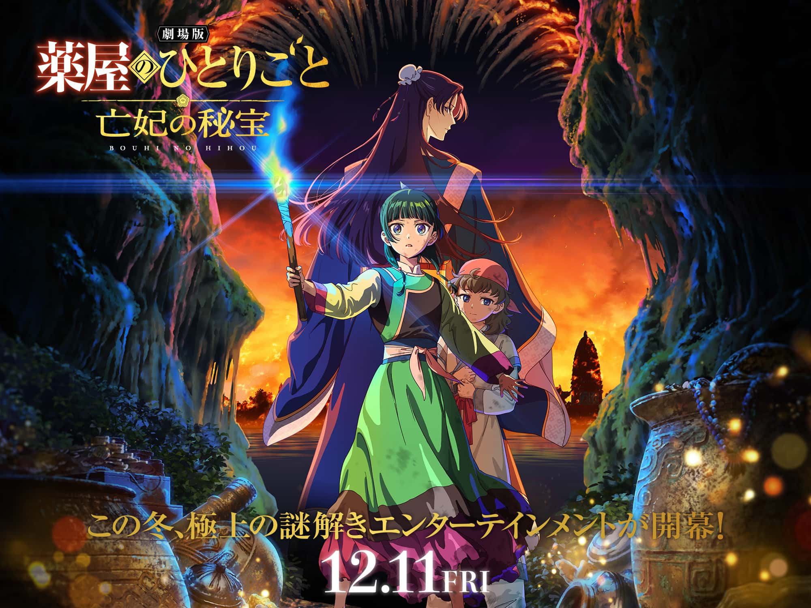
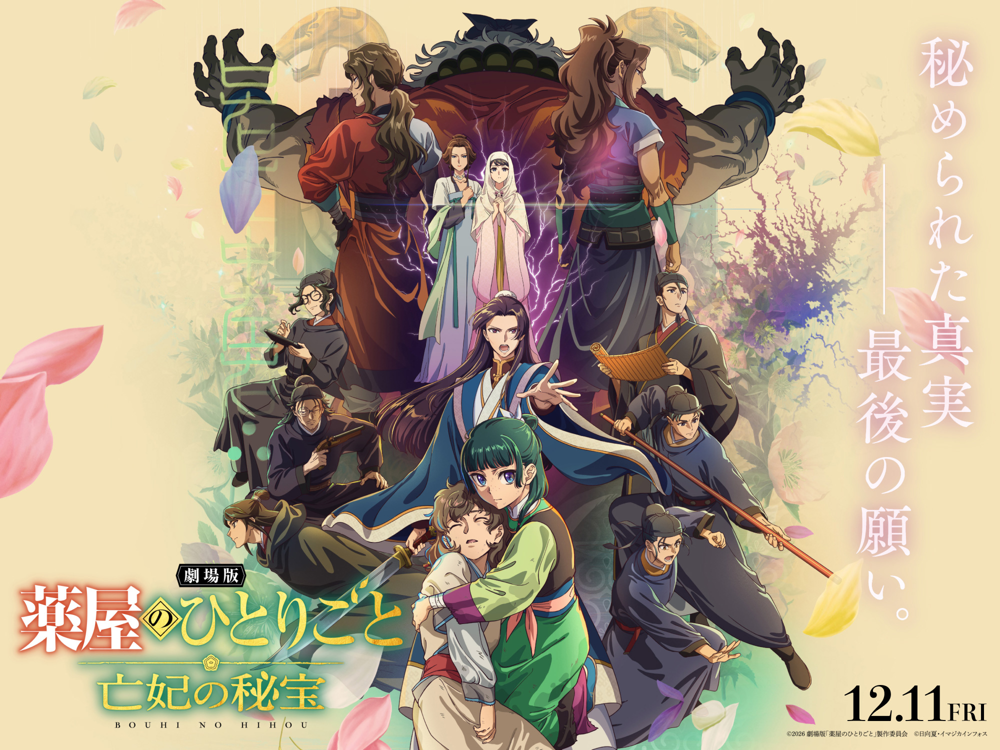
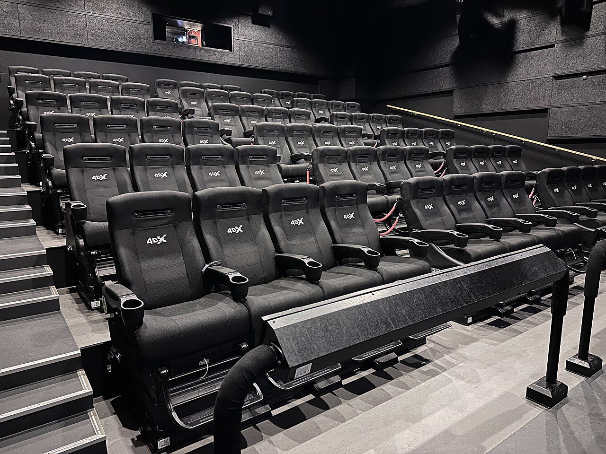

01
映画館
TOHO CINEMAS HIBIYA
TOHOシネマズ日比谷日比谷駅 直結
東京ミッドタウン日比谷の中の、都心のプレミアム館。大画面のTCXとドルビーアトモスで観られます。日比谷駅直結、有楽町駅からも徒歩4分。
LUNCH — この劇場の近く
松本楼：日比谷公園1-2。1903年創業の洋食店で、ランチは11:00–14:00（予約は原則不可、混雑時は待ちあり）。林屋新兵衛：ミッドタウン日比谷2F（映画館と同じ建物）。食事の提供は土日祝は15:00まで。
劇場版『亡妃の秘宝』と、劇場近くのランチ。ヨシくんへのお誘いページ



映画＋ランチに行ける日を並べました。都合のいい日と、行きたい劇場エリアを教えてください。
12/16（水）〜12/20（日）と 12/24、12/27〜31 は別件のため候補外です。上映時間は公開週に劇場スケジュールで確定するので、日程と劇場が決まったら近い回を押さえます。
『薬屋のひとりごと』の基礎と、劇場版の位置づけ。ネタバレなし（公式発表の範囲）でまとめました。
帝から壬氏に命が下された。5年前に後宮で命を落とした妃の「故郷へ帰りたい」という最期の願いを叶えること。彼女を家族の元へ返すため遺体を確認すると、まるで生きているかのように美しい姿のまま眠っていた。遺体の謎を解き明かすため、猫猫は壬氏に連れられ、未の一族が治める南の地・未南州へ。辿り着いたのは活気あふれる水上都市。見たことのない薬や植物に心躍らせる猫猫だったが、その地では前頭領が隠した財宝を巡り水賊が暴れまわり、不穏な空気が漂っていた。そして妃の葬儀当日、大事件が発生する——。
原作者・日向夏がストーリー原案を手がけた完全オリジナルストーリー（原作小説の映画化ではありません）。監督はTVシリーズの長沼範裕、主題歌は米津玄師「春が灯り」。配給は東宝。
都内で上映される劇場から、アクセスの良い6館（いずれもTOHOシネマズ、上映は公式の上映劇場リストで確認済み）。ピンをタップすると名前が出て、もう一度タップするとその劇場へ移動します。
略図です（縮尺は正確ではありません）。上映時間は各館とも公開週に確定します。
劇場ごとに、近くのランチを2軒ずつ。タイルをタップするとGoogleマップが開きます。
東京ミッドタウン日比谷の中の、都心のプレミアム館。大画面のTCXとドルビーアトモスで観られます。日比谷駅直結、有楽町駅からも徒歩4分。
松本楼：日比谷公園1-2。1903年創業の洋食店で、ランチは11:00–14:00（予約は原則不可、混雑時は待ちあり）。林屋新兵衛：ミッドタウン日比谷2F（映画館と同じ建物）。食事の提供は土日祝は15:00まで。
ゴジラヘッドが目印の新宿東宝ビル内、12スクリーンの大型館。歌舞伎町のど真ん中で、純喫茶の名店が2軒とも徒歩圏です。
珈琲西武 本店：歌舞伎町1-6-12 ハナミチ東京歌舞伎町2F（映画館のすぐ近く）。1964年創業、名物は新宿特製オムライス。日・祝は23:00まで。らんぶる：新宿3-31-3。1950年創業の名曲喫茶で、地下に約200席。12/31–1/3は休業。
コレド室町2の中。老舗が並ぶ日本橋の落ち着いた街並みで、客層も静かめ。喫茶と洋食の名店が2軒、どちらも徒歩数分です。
はまの屋パーラー 日本橋本店：室町1-7-2 八木長ビルB1F。1966年創業、名物は玉子サンドゥイッチ。日・祝は17:00まで。たいめいけん：室町1-8-6。昭和6年創業、タンポポオムライス発祥の店。1階は月曜定休（12/14・12/21は休み）。
上野フロンティアタワー（パルコヤ）の中。御徒町駅すぐ、上野駅からも徒歩5分。アメ横と上野公園のあいだで、喫茶・洋食の老舗が揃います。
珈琲 王城：上野6-8-15。1975年創業の純喫茶で、ナポリタンと厚切りトーストが名物。無休（90分制）。上野精養軒 本店レストラン：上野公園4-58。明治創業の洋食の老舗。平日11:00–17:00／土日祝10:30–18:00、月曜定休（12/14・12/21は休み）。
ハレザ池袋の中の大型館。アニメの街・池袋らしく、作品の世界観に浸るならここ。駅前には大正創業の洋食店と昭和の喫茶が残ります。
タカセ：東池袋1-1-4。1920年創業。3Fレストランのランチは11:00–15:45（L.O.14:50）、年中無休。2F喫茶室は9:00から。伯爵 池袋東口店：南池袋1-18-23。昭和ゴージャスな純喫茶、無休。
オリナスと楽天地の2館体制。ユウキの地元エリアで、駅の両側にホットケーキの名喫茶が2軒あります。下町でのんびり観るならここ。
トミィ：錦糸2-10-7。銅板で焼くホットケーキの名店ですが、営業は火〜金の10:00–17:00のみ（土日・月・祝は休み）。行けるのは平日の候補日だけです。ニット：江東橋4-26-12。1965年創業、極厚ホットケーキは提供まで20–30分。日曜定休。
キービジュアル2点は『劇場版 薬屋のひとりごと 亡妃の秘宝』公式サイト（©2026 劇場版「薬屋のひとりごと」製作委員会 ©日向夏・イマジカインフォス）からの引用。その他の写真は Wikimedia Commons：映画館の座席＝Wolfmann（CC BY-SA 4.0）、ミッドタウン日比谷からの眺め＝Syced（CC0）、新宿東宝ビル＝Tokumeigakarinoaoshima（CC BY-SA 4.0）、コレド室町＝Wpcpey（CC BY-SA 4.0）、上野フロンティアタワー＝Avenafatua（CC BY-SA 4.0）、ハレザタワー＝Beryllium Transistor（CC BY-SA 4.0）、オリナス＝Asanagi、ハヤシライス＝毒島みるく（CC0）、抹茶パフェ＝Misaochan2（CC BY 4.0）、オムライス＝毒島みるく（CC0）、ピザトースト＝Fred Cherrygarden（CC BY-SA 4.0）、たまごサンド＝ClickCh（CC BY-SA 4.0）、オムレツライス＝LN9267（CC BY-SA 4.0）、ナポリタン＝nakashi（CC BY-SA 2.0）、ビーフシチュー＝HarshLight（CC BY 2.0）、ハンバーグ＝MaedaAkihiko（CC BY-SA 4.0）、クリームソーダ＝Nesnad（CC BY 4.0）、ホットケーキ＝沼和1306（CC BY-SA 4.0）／Andy Li（CC0）。料理写真は各店の名物に近いイメージです。上映劇場はTOHOシネマズ公式の上映劇場リスト（2026年11月22日確認）。あらすじ・作品情報は公式サイトと公式発表に基づきます。営業時間・定休日は各店の公式情報と食べログ等で2026年11月22日に確認。年末年始は各店とも変更の可能性があります。地図は略図で縮尺は正確ではありません。